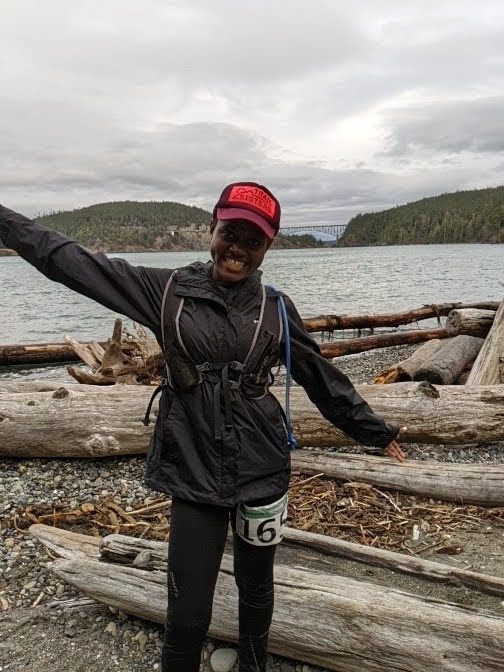
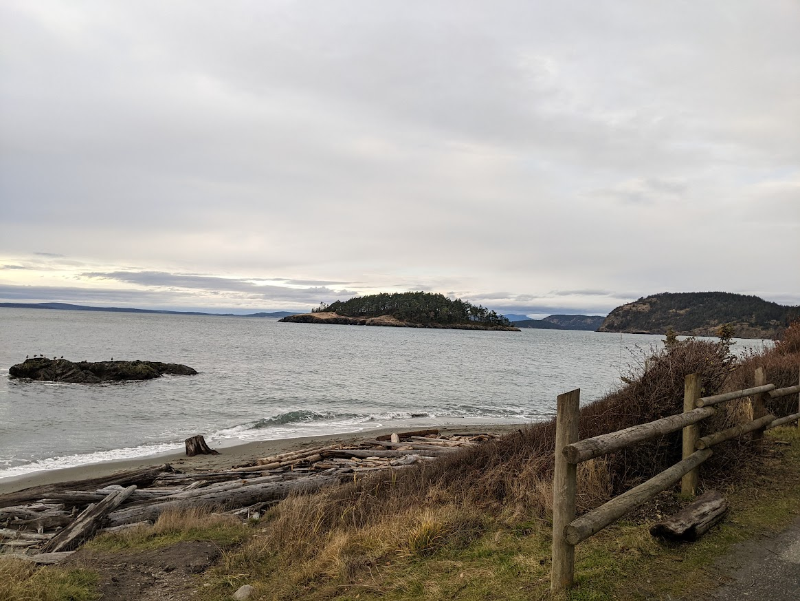

Every day should be a good day. People fool themselves that they’ll be here forever.
-Stephen A. Schwarzman
Saturday December 10th 2022 was a good day, of course there was a run involved. For the first time ever I ran a whole ultra on a whim and ended up running my fastest 50k to date. I say on a whim because I committed to running it at 4 am that morning. Normally I would plan every detail of race day far in advance but I signed up for this race way before I found out that I can expect unpredictable flares of inflammation for the rest of my life. 2 days leading up to the race, I was in such pain that I couldn’t comprehend sustaining 31 miles of repetitive motion. I resolved to attempt the race only if legs felt remotely better and that desicion would be made at 4am, the latest I could defer that desicion.
Running the race was reward in itself; the course traverses one the most beautiful parks in the state. The views were so breathtaking that at times I forgot I was in a race; even when the going got tough I embraced it with gratitude; I meditated, conversed with fellow runners, took breaks as needed and before I knew it, the finish line came to view. Sure there were annoyances like freezing temperatures, loud runners on the trail and 2 hour traffic back home but I was too content to care. I came, I saw, I conquered; it was a great day.

Its hard to pinpoint what exactly made it great but it had all the elements. There was the Spontaneity of it all, Awe in the scenery, Novelty in the new trails, Indulgence in my favorite Passion; running, a clearly defined challenge that seemed out of reach, Surpassing my expectations and the cherry on top meaningful connection with fellow runners. If I were to enlist everything I value in life I think this would be it. Some days you get none or a handful of them but once in a full moon they all come together to brew the perfect storm. These are the memorable days we call good days; accrue a bunch of them regularly and you have a good life.
There is a reason good days are hard to come by. It takes effort, perfect timing and some luck for the elements to align. We can’t control timing or luck but effort is well within our sphere of influence. We can proactively direct our time and energy to things that fulfill us; even in dire circumstances, we can do our best. It would have been a very different day if I let bad weather or inflammation stop me from training.
Good days are obviously good for us. We need them to make the bad days bearable, we need them to live a fulfilled life. We have to work for them but they are so worth it. As you make grand resolutions for the new year or modest weekend plans, I hope you choose good days. Thanks for reading and have a great day!
